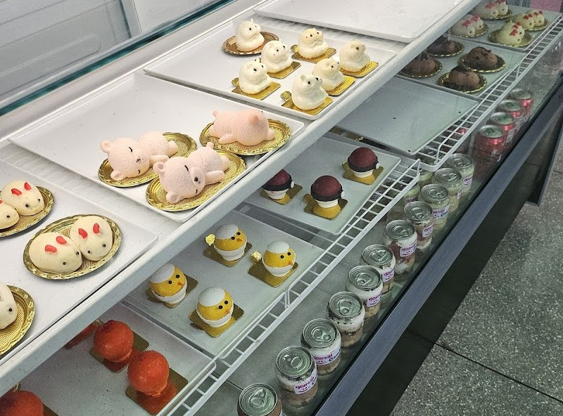
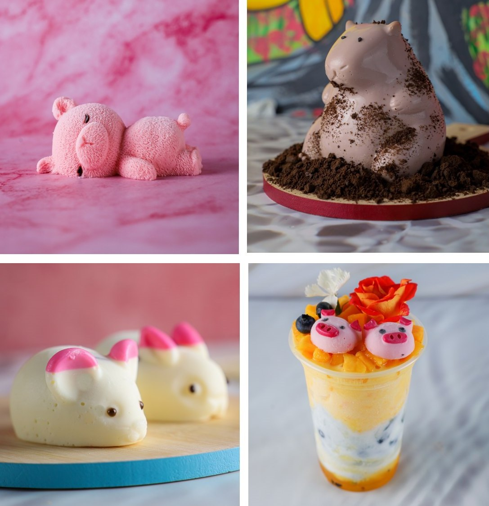
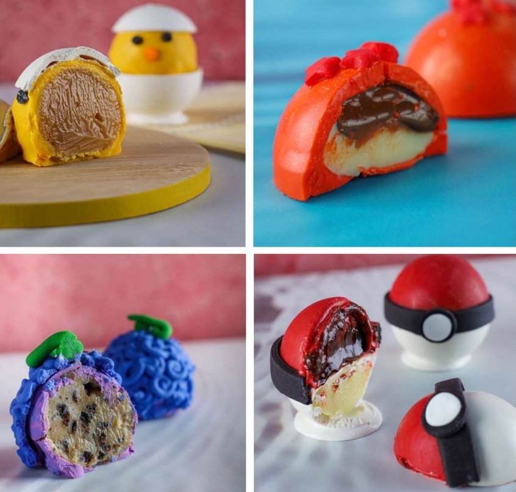

| Na Kureiji Candy, você encontra uma variedade de doces preparados com cuidado e dedicação. Cada opção é pensada para proporcionar uma experiência saborosa e especial. |
 |
|
Nosso cardápio reúne diferentes sabores e combinações
para agradar todos os gostos. |
 |
| Mais do que doces, queremos proporcionar momentos especiais. Explore nosso cardápio e descubra opções feitas para trazer sabor, criatividade e um toque de encanto ao seu dia. |
 |